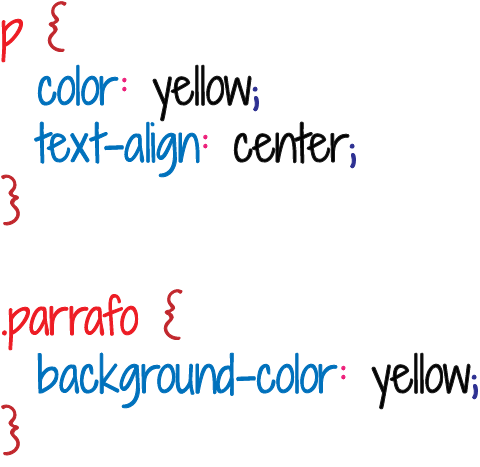

INFO DEL SITIO
La gran parte de la programación web está integrada por elementos de HTML (lenguaje de marcado para la elaboración de páginas web), JavaScript (es un lenguaje de programación interpretado, implementado como parte de un navegador web permitiendo mejoras en la interfaz de usuario y páginas web dinámicas) y CSS (lenguaje usado para definir y crear la presentación de un documento estructurado), creando sitios dinámicos, agradables a la vista y adaptables a diferentes tipos de dispositivos. Y esto, sumado al framework Phonegap (framework para el desarrollo de aplicaciones móviles que permite desarrollar aplicaciones para dispositivos móviles utilizando herramientas genéricas), brinda posibilidades muy convenientes para programadores.